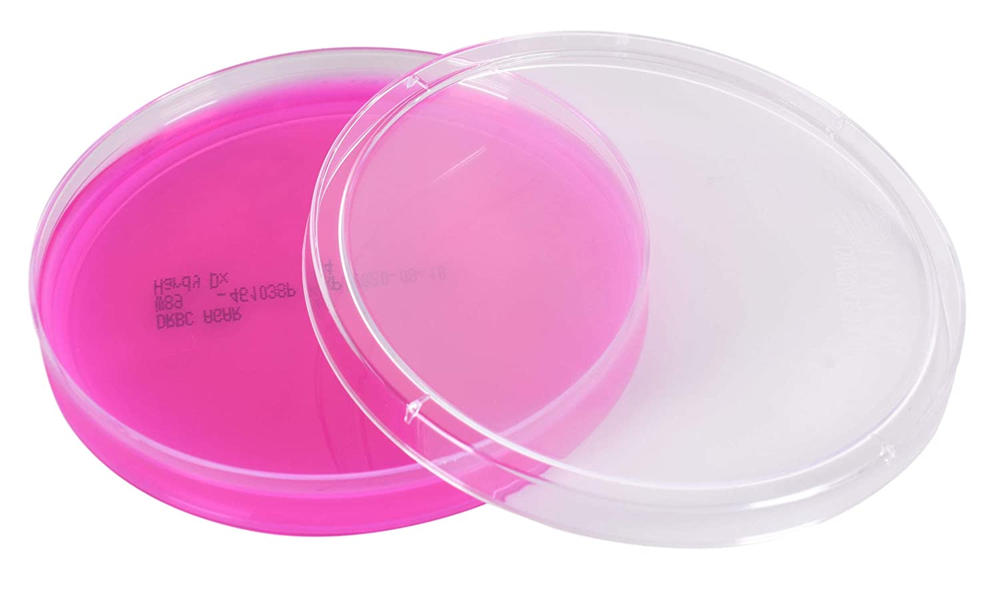
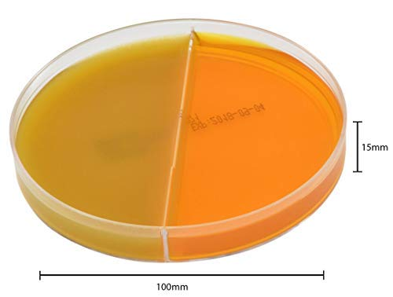
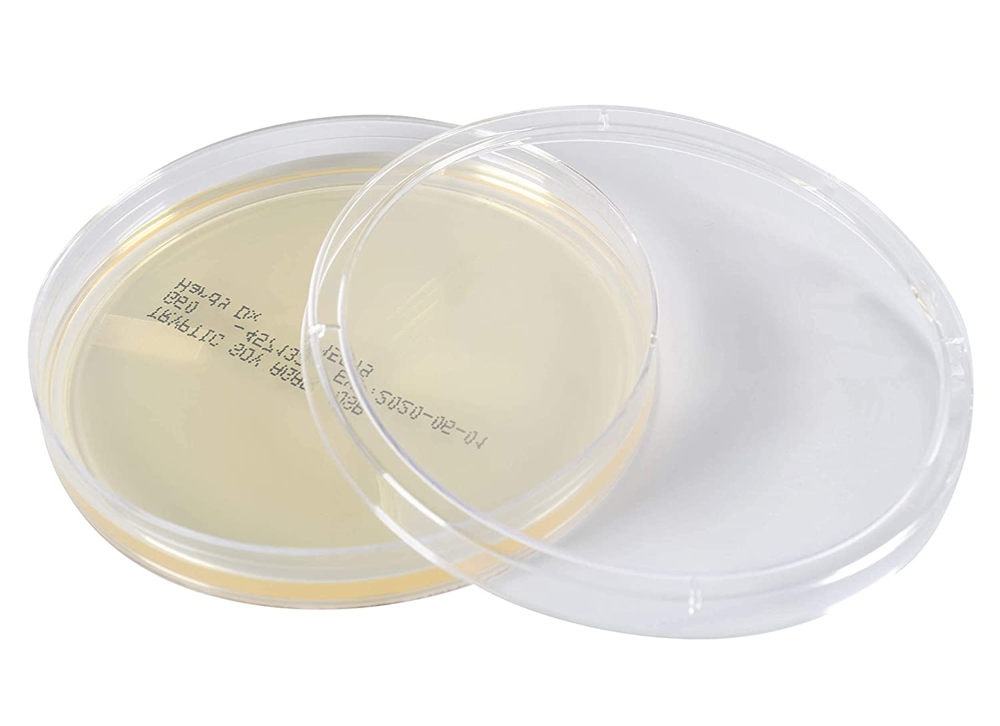

Nuestros productos
Medios de cultivos

medio: Agar Nutritivo para ensayos de salmonella

Medio: Agar Sangre para ensayos de listeria

Medio: DRBC para ensayos de hongos y levaduras

Medio: Dermatophyte para el aislamiento de dermatofitos a partir de lesiones cutáneas

Medio: TSA para el crecimiento y aislamiento de bacterias aeróbicas y anaeróbicas

Medio: BGSA para el aislamiento de Salmonella spp